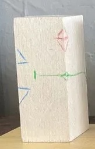

- Automatically write weather forecasts
- Create summaries
- Translate texts
- Answer questions
- almost indistinguishable from human-written texts
Were There Already Drones in Ancient Egypt?
Why We Should Become Detectives for Artificial Intelligence
November 28, 2024
Fantastic Find in Egypt
- An ancient drone was found near the pyramids!

- Now on display in the Egyptian Museum

Newspapers Report on Sensational Find

FAKE
What is Artificial Intelligence Actually?
- Remarkable: there isn’t really a fixed description!
- Wikipedia: Property […] that enables a being to act appropriately and with foresight in its environmentPlaying
 ConversingBeing Creative
ConversingBeing Creative Research
Research Building
Building Teamwork
Teamwork
“Computers Creating Something New”
Computers Can Generate Text
Images Can Be Modified
Automatically edit photos (closed eyes, distracting trash on the dream beach…)
Your uploaded images can be easily modified!


How Do We Know Which Words Follow?
We have a “feeling” about how a sentence continues - developed through
lots of listening,
speaking
and reading


This Also Works with Computers…
- Computers can “read” - let’s give them lots to read, for example the “Internet”.
- The entire Internet (~150 Zettabytes) printed on A4 paper placed side by side would reach to distant stars (more than 600 light years away!)
- about 42 million times the distance from Sun to Earth!
- Currently, models are “trained” on about as much as would reach to the moon 4 times
- STILL: The computer only learns to predict the next word!

Very Similar with Music
- The computer “listens” to all the music in the world
- It “learns” how a piece of music continues
- Creating music: Start with any note and then keep generating the next one
- Keep checking what notes have already been played so it “sounds good”
- But: “sounding good” in this case means “like what it learned”
- Many computer-generated songs sound familiar

How Do We Make Art?
How can you draw?


How do you carve an owl?



simplest approach: start rough, and then make it increasingly refined.
And in the Computer?
- The computer learns to generate images from “noise”


Signs of AI-Generated Content
- Images
- unnatural details (hands, ears, hair)
- text
- logic errors (reflections, strange details)
- “too perfect” (soft images, “10 past 10”)
- Videos
- things disappear or appear
- flickering
- Texts
- very superficial, formal, apologetic

Which Photo is Real?


(Encyclopedia Brittannica:
https://elearn.eb.com/real-vs-ai-images/)
Welches Foto ist echt?


(Encyclopedia Britannica:
https://elearn.eb.com/real-vs-ai-images/)
Which Photo is Real?

(Encyclopedia Britannica:
https://elearn.eb.com/real-vs-ai-images/)
Which Photo is Real?


(Encyclopedia Britannica:
https://elearn.eb.com/real-vs-ai-images/)
Which Photo is Real?


(Encyclopedia Britannica:
https://elearn.eb.com/real-vs-ai-images/)
Which Photo is Real?


(Encyclopedia Britannica:
https://elearn.eb.com/real-vs-ai-images/)
Which Photo is Real?

(Encyclopedia Britannica:
https://elearn.eb.com/real-vs-ai-images/)
Which Photo is Real?


(Encyclopedia Britannica:
https://elearn.eb.com/real-vs-ai-images/)